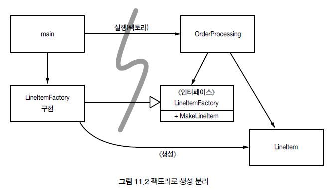

시스템
한 사람이 도시 전체를 이해하지 않아도, 여러 사람들이 모여 도시를 운영해나갈 수 있다. 이러한 것이 가능한 이유가 적절한 추상화와 모듈화이다.
🧹시스템의 제작과 사용을 분리하라
건물을 제작할 때는 기중기와 승강기가 있으며 안전모에 작업복을 입은 사람들이 돌아다닌다. 반면, 건물을 사용할 때에는 기중기와 승강기는 사라지고 건물을 실제로 사용하는 사람들이 돌아다닐 것이다.
이러한 내용을 소프트웨어 단계로 옮겨본다면, 시스템은 객체를 제작하고 의존성을 연결하는 준비 과정과 준비 과정 이후 발생하는 런타임 로직을 분리해야한다.
🧹Main 분리
생성과 관련한 코드는 main과 main이 호출하는 모듈로 옮기고, 나머지 시스템은 모든 객체가 생성되었고 모든 의존성이 연결되었다고 가정하는 환경이다. 이러한 상황은 아주 간단한 로직으로 이루어진다. main 함수가 시스템에 필요한 객체를 생성한 후 애플리케이션에서 객체를 넘겨받아 사용하면 된다.
- 팩토리
객체가 생성되는 시점을 main이 아닌 애플리케이션에서 결정해줘야하는 경우가 존재한다. 이런 경우, Abstract Factory 패턴을 사용할 수 있다.

이렇게 되면 LineItem을 생성하는 시점은 애플리케이션이 결정하지만, 생성 과정이나 로직은 알지 못하도록 구성할 수 있다.
- 의존성 주입
또다른 메커니즘으로는 의존성 주입이 존재한다. 의존성 주입을 통해서 수동적인 클래스의 한계를 벗어날 수 있다.
🧹확장
소프트웨어 시스템은 물리적인 시스템과 다르다. 관심사를 적절히 분리해 관리한다면 소프트웨어 아키텍쳐는 점진적으로 발전할 수 있다.
- 횡단(cross-cutting) 관심사
영속성과 같은 관심사는 애플리케이션의 자연스러운 객체 경계를 넘나드는 경향이 있으며 모든 객체가 전반적으로 동일한 방식을 이용하게 만들어야한다.
같은 명명 관례, 일관적인 트랜잭션 의미 등을 사용하는 것이 바람직한 방향이다.
🧹자바 프록시
자바 프록시는 개별 객체나 클래스에서 메서드 호출을 감싸는 경우와 같이 단순한 상황에 적합하다. 하지만 JDK에서 제공하는 동적 프록시는 인터페이스만 지원하고 있으며 클래스 프록시를 사용하기 위해서는 여러 바이트 코드 처리 라이브러리를 사용해야한다.
하지만, 자바 프록시를 사용하면서 발생하는 코드 양과 크기가 프록시의 두 가지 단점으로 꼽히기도 한다. 따라서 프록시를 사용하는 것이 깨끗한 코드를 작성하기 어렵다고 볼 수 있다. 또한, 시스템 단위로 실행 지점을 명시할 수 있는 메커니즘을 제공하지 않는다는 점에서 사용할 이유가 적은 방식이다.
🧹순수 자바 AOP 프레임워크
자바 프록시를 사용하지 않고 이를 대체할 수 있는 방법 중 하나로 프레임워크의 사용이 있다. 프록시 코드는 대부분 서로 유사하여 프레임워크 도구 등으로 자동화할 수 있다. 따라서 스프링 AOP 등을 비롯한 자바 프레임워크 내부에서 사용하는 프록시를 이용할 수 있다. 스프링에서는 Annotation을 이용하여 코드를 더 깨끗하게 만들었으며 테스트와 유지보수를 더욱 쉽게 할 수 있게 되었다.
🧹AspectJ 관점
관심사를 관점으로 분리하는 가장 강력한 도구는 AspectJ언어라고 한다. 자바 언어의 확장으로 스프링 AOP와 같이 순수 자바 방식으로도 다룰 수 없는 복잡한 상황을 해결해줄 수 있다는 장점이 있지만 새로운 도구와 언어 문법을 익혀야한다는 것이 단점으로 꼽힌다.
🧹테스트 주도 시스템 아키텍처 구축
앞에서 이야기한 내용들을 토대로 애플리케이션 도메인 논리를 POJO로 작성한다면 테스트 주도 아키텍처 구축이 가능해지며 여러 기능, 기술들이 추가되며 복잡한 아키텍쳐로 키워갈 수 있다.
최선의 시스템 구조는 각기 POJO 객체로 구현되는 모듈화된 관심사 영역으로 구성된다. 이렇게 서로 다른 영역은 해당 영역 코드에 최소한의 영향을 미치는 관점이나 유사한 도구를 사용해 통합한다. 이런 구조 역시 코드와 마찬가지로 테스트 주도 기법을 적용할 수 있다.
🧹의사 결정을 최적화하라
관심사를 모듈로 분리한 POJO 시스템은 기민함을 제공한다. 이런 기민함 덕택에 최신 정보에 기반해 최선의 시점에 최적의 결정을 내리기가 쉬워진다. 또한 결정의 복잡성도 줄어든다.
🧹명백한 가치가 있을 때 표준을 현명하게 사용하라
표준을 사용하면 아이디어와 컴포넌트를 재사용하기 쉽고, 적절한 경험을 가진 사람을 구하기 쉬우며, 좋은 아이디어를 캡슐화하기 쉽고, 컴포넌트를 엮기 쉽다. 하지만 때로는 표준을 만드는 시간이 너무 오래 걸려 업계가 기다리지 못한다. 어떤 표준은 원래 표준을 제정한 목적을 잊어버리기도 한다.
🧹시스템은 도메인 특화 언어가 필요하다
도메인 특화 언어 DSL을 사용하면 고차원 정책에서 저차원 세부사항에 이르기까지 모든 추상화 수준과 모든 도메인을 POJO로 표현할 수 있다.
결론
모든 추상화 단계에서 의도는 명확히 표현해야한다. 그러기 위해서는 POJO를 작성하고 관점 혹은 관점과 유사한 메커니즘을 사용해 각 구현 관심사를 분리해야한다.
아직은 해당 챕터의 내용을 전부 이해하지는 못했다. POJO, AOP는 아직까지 완벽히 이해하기 어려운 것 같다. 관련 코드를 자주 접하다보면 자연스럽게 이해할 날이 올 것이라고 생각한다.
창발성
켄트 벡이 이야기하는 단순한 설계 규칙 4가지가 소프트웨어 설게 품질을 크게 높여준다고 한다.
- 모든 테스트를 실행한다
- 중복을 없앤다
- 프로그래머 의도를 표현한다
- 클래스와 메서드 수를 최소로 줄인다
하나씩 알아보도록 하자.
🧹모든 테스트를 실행하라
설계는 의도한 대로 돌아가는 시스템을 완성해야한다. 이를 인정받기 위해서는 테스트가 중요하다. 철저한 테스트가 가능한 시스템을 만들면 더 좋은 설계가 완성된다.
이는 낮은 결합도와 높은 응집력이라는 결과를 가져다 줄 것이다.
🧹리팩터링
테스트 케이스의 연장선인 리팩터링이 있다. 리팩터링을 할 때에는 코드를 수정하는 결과가 설계 품질을 낮추는지, 기존 기능을 깨뜨리지 않았는지 생각해봐야한다. 하지만, 이러한 내용들도 테스트가 잘 짜여있다면 걱정하지 않아도 된다. 이 단계에서는, 응집도 높이기, 결합도 낮추기, 관심사 분리ㅏ기, 시스템 관심사 모듈로 나누기, 함수와 클래스 크기 줄이기, 더 나은 이름 짓기 등과 같이 다양한 기법들을 동원하여 수정할 수 있다.
🧹증복을 없애라
중복은 추가 작업, 추가 위험, 불필요한 복잡도를 가지고 있는 커다란 적이다. 비슷한, 중복있는 코드들을 더욱 비슷하거나 아예 합쳐버리는 방향으로 나가면 리팩터링이 더 쉬워질 것이다. TEMPLATE METHOD 패턴은 고차원 중복을 제거하는 목적으로 자주 사용하는 기법이므로 알아두는 것이 좋다.
TEMPLATE METHOD PATTERN
🧹표현하라
스스로 작성하는 코드는 이해하기 쉽다. 하지만 시간이 지나거나, 다른 사람이 작성한 코드를 본다면 바로 이해하기 힘든 경우가 많다. 따라서 코드에는 개발자의 의도를 분명히 담아야한다.
- 좋은 이름 : 좋은 이름은 그 자체로 좋은 문서가 된다
- 함수와 클래스 크기 줄이기 : 크기가 작아질수록 구현과 이해가 쉬워진다.
- 표준 명칭 사용 : 표준 패턴과 관련된 이름들을 클래스 이름에 포함하는 것이 좋다.
- 단위 테스트 케이스 작성 : 테스트 케이스는 예제로 보여주는 문서가 될 수 있다.
- 노력 : 코드에 의도를 담는 노력을 하지 않으면 아무 의미가 없다.
🧹클래스와 메서드 수를 최소로 줄여라
함수와 클래스의 길이를 줄이라고 앞서 수없이 강조했다. 하지만, 이것들도 극단으로 치닫는다면 분명 비효율적인 시점이 올 수 있다. 유지보수와 수정 단계에서 이러한 과정이 극단적이지는 않았는지 클래스와 메서드 수를 줄여보는 시도를 하는 것이 실용적일 수 있다.
결론
경험을 대신할 단순한 개발 기법은 존재하지 않는다. 하지만 이러한 내용 하나하나가 한번의 경험을 대신해줄 것이라고 생각한다. 그러므로 우수한 기법과 원칙에서 기원한 설계 규칙, 패턴 등에 대해서 조금 더 공부할 필요성을 느끼고 있다.